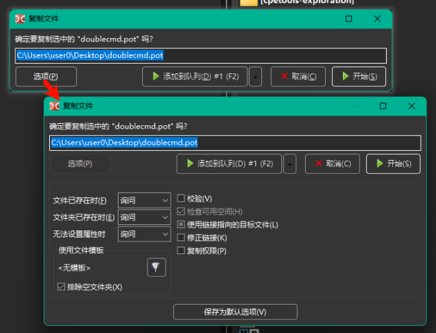

在复制或移动文件时显示的确认对话框，可在其中更改若干参数。复制与移动操作的对话框仅在少数参数上有所不同，因此在此处一并说明。

可以使用 F5（复制）、Shift+F5（在同一目录复制）和 F6（移动）快捷键调用，或使用功能键栏的按钮，或通过内部命令（cm_Copy、cm_CopySamePanel 和 cm_Rename）调用。当启用 拖放完成后显示确认对话框 时，拖放文件也会弹出此对话框。
对话框显示一个可编辑字段，用于目标目录和文件掩码（或单个文件名），可以手动修改目标路径和文件名。使用 F5 或 F6 可以按顺序切换选中项：基础文件名、文件名、扩展名、路径、全部。如果未指定目标目录（例如通过 cm_CopySamePanel 或手动编辑），文件将复制到源目录。
文件掩码决定复制或移动时如何重命名文件（符号 "*" 表示任意数量字符，符号 "?" 表示任意单个字符）。例如，可指定 *.*.bak 将为所有复制的文件添加 .bak 扩展名。使用 *.ext 可将所有复制文件的扩展名替换为 ext。或者例如使用 ????.* 将名称截断为前四个字符。出现在 *.* 之前的符号会从名称的第一位开始替换字符。如果掩码不适用，名称将保持不变。
若干按钮说明：
开始 和 取消 – 开始或取消操作。
添加到队列 – 将任务添加到文件操作队列。若同时有多个任务运行时，这很方便：可以在队列中更改任务顺序、停止或暂停任务。文件操作列表窗口可通过 显示 菜单中的 操作查看器 项或按 Alt+V（内部命令 cm_OperationsViewer）调用。
选项 – 展开附加选项。
第一组选项用于在名称冲突或无法设置文件属性时确定要执行的操作：
文件已存在时 – 如果目标目录已存在同名文件。可选操作：询问、覆盖、覆盖旧的、跳过。
文件夹已存在时 – 如果目标目录已存在同名文件夹。可选操作：询问、合并、跳过。
无法设置属性时 – 当无法设置文件时间、属性等（例如目标目录的文件系统限制）时的处理方式。可选操作：询问、不再设置、忽略错误。
询问（默认）会提供更多可选操作（见下文）。
下一组为过滤器，可指定要复制或移动的文件（文件掩码、文件年龄等）。在此可以看到所选模版并：
选择模版... 按钮（ ）会打开包含已保存模版列表的窗口，并允许添加新模版。
）会打开包含已保存模版列表的窗口，并允许添加新模版。
排除空文件夹 – 启用后仅复制或移动非空文件夹。仅在使用模版时生效。
下面的参数列表会根据文件操作类型和操作系统家族有所不同。
校验 – 启用后，Double Commander 将对源文件与目标目录中的复制文件进行比较：在 Windows 上为逐字节比较，在 Linux 等系统上使用 BLAKE2 校验和。程序会尽量减少磁盘缓存影响（如果文件系统不支持直接 I/O，则会报告校验失败）。请注意，此功能会显著降低操作速度，且每个文件会被读取两次，因此进度条中的总大小会加倍。在 macOS 上不可用。
检查可用空间 – 在复制前检查目标目录是否有足够的可用磁盘空间。
预分配空间 – 启用后，Double Commander 将预分配磁盘空间，从而减少文件碎片的可能性，同时也是更快的创建文件方式。在 Windows 上 Double Commander 始终预分配空间。在使用 FAT32 分区的 Linux 上此项无效。
追踪链接 – 启用后，程序会将指向文件夹的符号链接视为普通文件夹并复制其内容；对于文件链接，将复制链接指向的目标文件。复选框的三态（不确定）表示每次询问如何处理。
修正链接 – 启用后，程序会检查链接并在需要时根据目标目录修正其目标路径。如果使用相对路径，则修正后的路径仍写为相对路径。
复制权限 – 启用后会复制源文件的权限，否则使用当前用户的默认值，通常为文件 664、目录 775。另见 <CopyXattributes> 的说明。对于 Windows，请参见 <CopyAttributes>。
删除只读标志 – 启用后会添加 "w" 属性（Linux）。
复制日期/时间 – 启用后会复制源文件的修改时间，否则使用当前时间。对于 Windows，请参见 <CopyTime> 的说明。
复制所有权 – 如果未启用，目标文件的所有者将为运行程序的用户。
复制权限 – 允许复制 NTFS 文件系统特有的权限，否则使用当前用户的权限（即运行程序的用户）。仅适用于 Windows。
写时复制 – 支持 Btrfs 文件系统的写时复制（COW）特性：默认情况下 Btrfs 对本地文件使用 COW。Windows 上不可用。
注意：从归档中复制文件时，只有 文件已存在时 参数可用。从文件系统插件（WFX）复制时，可用多个参数：文件已存在时、复制日期/时间 和 在后台工作（单独连接）。最后一个参数可防止文件操作进度窗口阻塞 Double Commander 主窗口。
保存为默认选项 – 将当前值设为下次复制/移动操作的默认值。
另一种复制或移动文件的方式：可以使用 复制 与 粘贴 或 剪切 与 粘贴 命令，通过键盘（默认 Ctrl+C/Ctrl+V 或 Ctrl+X/Ctrl+V）或在 上下文菜单 中选择相应项。
在此情况下，操作将直接启动而不弹出确认对话框。Double Commander 会使用保存为默认的操作设置，但不包括 校验 参数（见上文说明）。
如果在活动面板（同一目录）中复制并粘贴文件，将使用 文件操作设置 中的模版自动重命名，创建重复文件的副本。
该对话框显示操作进度的详细信息：两个进度条（当前处理文件和总体进度）、百分比（在标题中）、文件总数与已处理数量、当前文件的完整路径及在目标目录中的名称、大小、速度和剩余时间。
按钮：
暂停/继续 – 暂停或继续操作。
取消 – 取消操作并关闭对话框。
最小化到面板 – 将对话框最小化到 操作面板。
查看所有 – 打开 Operations Viewer 窗口。
如果要复制的文件在目标目录已存在同名文件，Double Commander 会提供多种处理方式。自动选择的操作（无需用户参与）不会保存为后续复制/移动操作的默认行为。
如果存在同名文件夹：
合并 – 将源文件夹的内容复制到目标目录中同名的文件夹中。
全部合并 – 与上项相同，并在后续的名称冲突中自动使用该操作。
跳过 – 不复制该文件夹。
全部跳过 – 与上项相同，并在后续冲突中自动使用该操作。
如果存在同名文件：
覆盖 – 用源文件内容替换目标目录中的文件内容。
全部覆盖 – 与上项相同，并在后续冲突中自动使用该操作。
覆盖所有较早的文件 – 仅替换修改时间较旧的文件。
跳过 – 不复制该文件。
全部跳过 – 与上项相同，并在后续冲突中自动使用该操作。
重命名 – 弹出对话框并可即时手动更改源文件的文件名。
恢复 – 若目标文件比源文件小或为空，则将差异追加到目标文件末尾。此功能在例如下载或复制因程序崩溃中断后从其它位置恢复文件时可能更方便、更快。启用 保留空间 时不可用。
其他 – 其他附加操作菜单：
比较文件内容 – 调用 Compare by Contents 命令。
追加 – 将源文件内容追加到目标文件末尾。
覆盖所有较小的文件 – 仅替换比源文件小的文件。
覆盖所有较大的文件 – 仅替换比源文件大的文件。
自动重命名源文件 – 使用 文件操作设置 中的模版自动重命名要复制的源文件。
自动重命名目标文件 – 与上项类似，但重命名目标目录中已存在的文件。
单击 取消 按钮将中止操作。